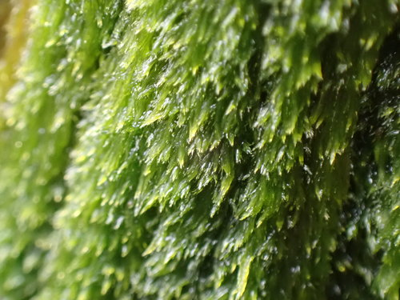

Pylaisiadelphaceae
(No widely accepted common name)
The Pylaisiadelphaceae is a family of pleurocarpous mosses within the order Hypnales, closely related to Hypnaceae and Sematophyllaceae. Plants are typically small to medium-sized, often glossy, forming mats on wood or rock. Key features often include leaves that are homomallous or secund, a costa that is short and double or absent, and distinct alar regions composed of small, quadrate cells.
Overview
Pylaisiadelphaceae is a family of mosses whose circumscription and relationship to similar families like Hypnaceae and Sematophyllaceae are actively researched and sometimes debated. As currently understood by many, it includes genera like Pylaisiadelpha, Brotherella, and Isopterygium. These mosses are typically pleurocarpous, forming often glossy, intricate mats or wefts.
They are found worldwide (cosmopolitan) but are common in temperate and tropical forests. They primarily grow as epiphytes on tree bark, decaying logs, and stumps, or sometimes on shaded rocks or humus. Distinguishing them often requires careful examination of the costa (short/double or absent) and the alar cells (typically small and quadrate, forming distinct groups).
Quick Facts
- Scientific Name: Pylaisiadelphaceae Goffinet & W.R. Buck
- Common Name: (No widely accepted common name)
- Number of Genera: Approximately 10-15 (circumscription varies; includes e.g., Pylaisiadelpha, Brotherella, Isopterygium, Heterophyllium)
- Number of Species: Approximately 100+
- Distribution: Cosmopolitan.
- Evolutionary Group: Bryophytes - Mosses (Class: Bryopsida, Order: Hypnales)
Key Characteristics
Growth Form and Habit
Plants are pleurocarpous, typically small to medium-sized, forming interwoven mats or wefts that are often glossy green, yellowish-green, or golden. Stems are creeping or ascending, usually irregularly or subpinnately branched.
Leaves
Leaves are typically ovate-lanceolate to lanceolate, usually gradually tapering to an acuminate (pointed) apex. They are often homomallous (all pointing in the same general direction, often towards the substrate) or somewhat secund (curved to one side), but can also be straight or slightly complanate (flattened). Margins are usually plane, typically entire or finely serrulate near the apex. The costa (midrib) is characteristically very short and double, or completely absent. A key feature is the alar region: the cells at the basal corners form distinct, often clearly demarcated groups, typically composed of several rows of small, quadrate or short-rectangular cells. These groups are usually not large and inflated (unlike Sematophyllaceae). Upper leaf cells (laminal cells) are typically long-linear or linear-flexuose, and usually smooth. Some species frequently produce asexual propagules, such as small gemmae or specialized fragile branchlets (brood branches).
Sporophyte (Capsule)
Sporophytes arise laterally from stems or branches. The seta (stalk) is usually long, slender, smooth, and often reddish or yellowish. The capsule is typically small, erect to inclined (rarely horizontal), ovoid to cylindrical, and generally symmetric or only slightly asymmetric. It may be slightly constricted below the mouth when dry but is usually not strongly strumose. The operculum (lid) is typically conical to rostrate.
The peristome is double and well-developed, of the Hypnoid type. The 16 outer exostome teeth are lanceolate, yellowish to brownish. The inner endostome usually has a distinct basal membrane, keeled segments, and often well-developed cilia, although the cilia can be rudimentary or absent in some species.
Habitat
Primarily found growing as epiphytes on the bark of living trees (trunks and branches), decaying logs, stumps, and exposed roots. Also common as epiliths on shaded rocks. Less frequently found directly on humus or soil. They inhabit forests and woodlands across a wide range of climates.
Field Identification
Identifying Pylaisiadelphaceae often involves careful checking of costa and alar cells, distinguishing them from similar Hypnales families:
Primary Identification Features
- Costa Very Short & Double, or Absent: A key negative character (lacks a single strong costa).
- Alar Cells Small and Quadrate/Rectangular: Forming distinct groups at basal corners, but cells themselves are small, not large and inflated (requires magnification).
- Pleurocarpous Habit, Often Glossy: Forming mats, frequently with a sheen.
- Habitat: Typically on wood (bark, logs) or rock.
Secondary Identification Features
- Leaves Often Homomallous/Secund: Pointing somewhat in the same direction.
- Smooth, Linear Leaf Cells: Upper cells elongated and non-papillose.
- Erect to Inclined Capsule: Capsule usually not strongly curved or horizontal.
- Presence of Asexual Propagules: Common in some species (Isopterygium, Brotherella).
Seasonal Identification Tips
- Year-Round Gametophytes: Plants are visible year-round.
- Sporophytes Common: Many species fruit readily, often maturing in spring or summer.
- Asexual Propagules: Look for gemmae or specialized branchlets on vegetative plants.
Common Confusion Points
- Hypnaceae: Very closely related. Also has short/double costa and Hypnoid peristome. Distinction is often difficult; Hypnaceae may have less clearly defined alar groups, or alar cells of slightly different shape/size. Sometimes considered paraphyletic with respect to Pylaisiadelphaceae.
- Sematophyllaceae: Also often glossy with short/absent costa and falcate/secund leaves. Critically differs in having large, inflated alar cells, not small quadrate ones.
- Plagiotheciaceae: Often more strongly flattened (complanate), leaves often asymmetric, alar cells usually indistinct or decurrent (running down the stem).
- Entodontaceae: Often glossy, short/double costa, but typically julaceous or complanate shoots, indistinct alar cells, and often reduced peristome.
- Brachytheciaceae: Usually distinguished by having a single, stronger costa extending further up the leaf.
Field Guide Quick Reference
Look For:
- Pleurocarpous mats, often glossy
- Habitat: Wood or rock
- Costa very short & double, or absent
- Alar cells forming distinct group of small, quadrate cells (lens/microscope)
- Leaves often homomallous/secund
Key Variations:
- Genera Pylaisiadelpha, Brotherella, Isopterygium
- Leaf cells linear, smooth
- Capsule erect to inclined
- Asexual propagules common
Notable Examples
Genera like Brotherella and Isopterygium are often included here.

Brotherella tenuirostris
Thin-beaked Brotherella Moss
Commonly found on logs or tree bases in humid forests in eastern North America and East Asia. Forms dense, glossy, often golden-green mats. Leaves are strongly falcate-secund with long, tapering points. Costa is very short/double or absent. Alar cells form a distinct group of small, quadrate cells. Capsules inclined on long reddish setae.

Isopterygium elegans
Elegant Silk Moss
A widespread species found on shaded soil banks, rocks, and tree bases in temperate regions. Forms smooth, silky, often pale green mats. Shoots are somewhat flattened (complanate). Leaves are lanceolate, often slightly asymmetric, pointing downwards (homomallous). Costa absent. Alar cells indistinct. Often produces small, filamentous propagules in leaf axils.

Pylaisiadelpha recurvans
(Often includes Brotherella recurvans)
Common in eastern North America on tree bases, logs, and rocks. Forms glossy, yellowish-green mats. Leaves are strongly falcate-secund, lanceolate with long acumens. Costa absent or very short/double. Alar cells form a distinct group of quadrate cells. Capsules erect to slightly inclined.
Phylogeny and Classification
Pylaisiadelphaceae is placed within the order Hypnales, the largest order of mosses. It is part of the core Hypnales group, closely related to Hypnaceae, Sematophyllaceae, Entodontaceae, and Plagiotheciaceae. The boundaries between these families, particularly Pylaisiadelphaceae and Hypnaceae, are often unclear and subject to revision based on molecular data.
The family concept often groups together genera with a short or absent costa and distinct groups of small, quadrate alar cells. Genera like Brotherella have historically been placed in Sematophyllaceae but are often moved to Pylaisiadelphaceae based on alar cell structure and molecular evidence. Similarly, Isopterygium is sometimes placed within Hypnaceae or Plagiotheciaceae. This taxonomic fluidity highlights the complexity of relationships within this part of the Hypnales tree.
Position in Plant Phylogeny
- Kingdom: Plantae
- Division: Bryophyta (Mosses)
- Class: Bryopsida
- Order: Hypnales
- Family: Pylaisiadelphaceae
Evolutionary Significance
The Pylaisiadelphaceae family (in its various circumscriptions) is significant for:
- Hypnales Diversity: Representing a substantial component of the diversity within the Hypnales, particularly among epiphytic and epilithic mosses.
- Alar Cell Variation: Showcasing the taxonomic importance of alar cell structure (small, quadrate groups) in distinguishing lineages within the Hypnales complex.
- Costa Reduction: Exhibiting the trend towards costa reduction or loss, common in many advanced pleurocarpous mosses.
- Taxonomic Challenges: Highlighting the difficulties in delimiting families based solely on morphology within large, closely related groups, emphasizing the role of molecular data.
- Asexual Reproduction: The frequent occurrence of specialized asexual propagules in some genera illustrates alternative reproductive strategies.